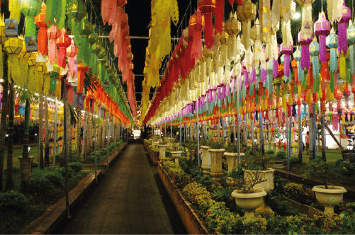
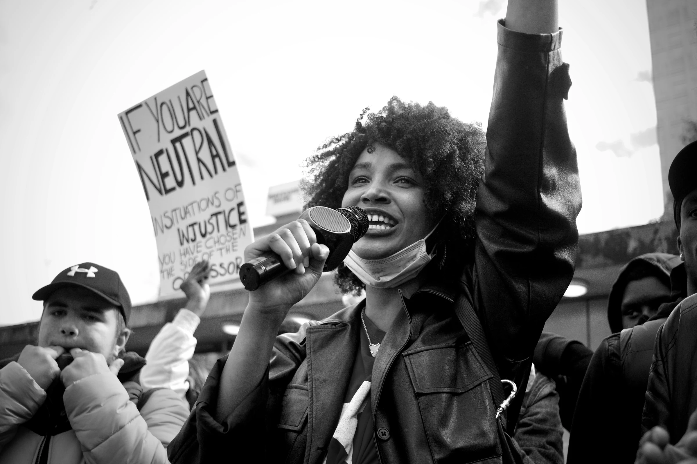
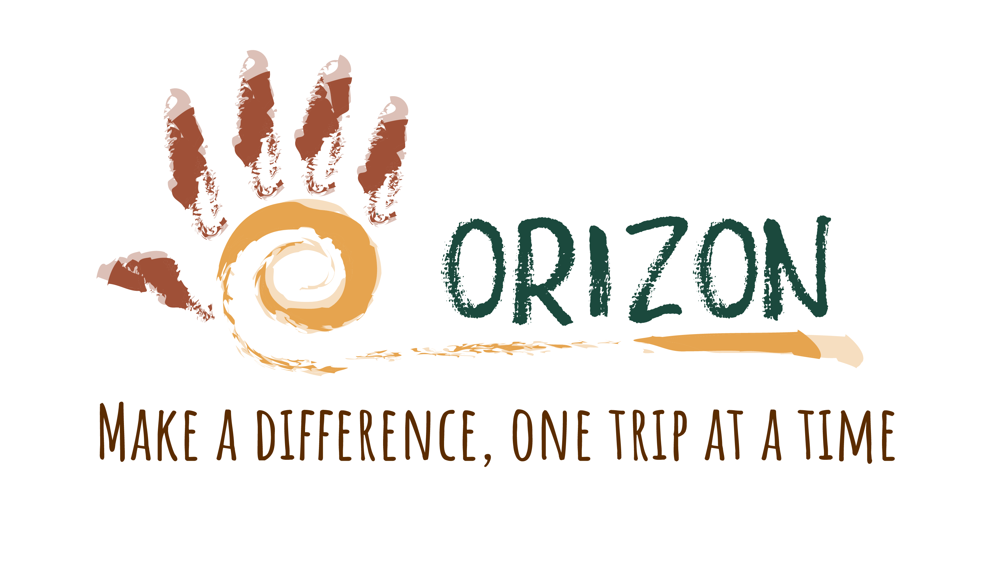
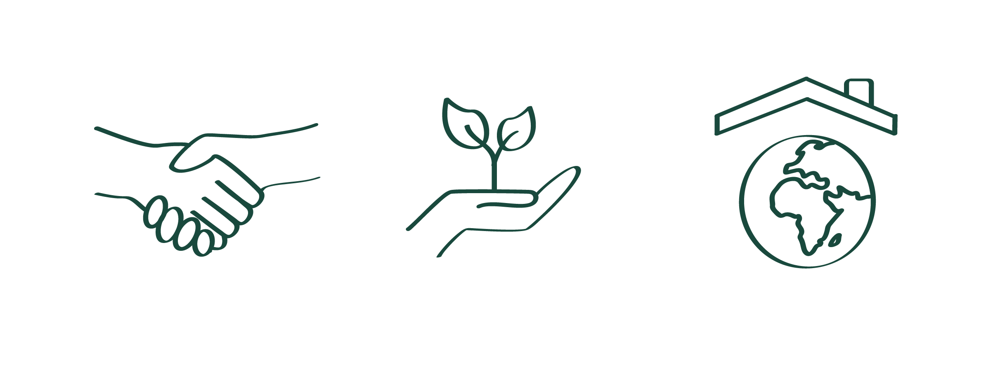
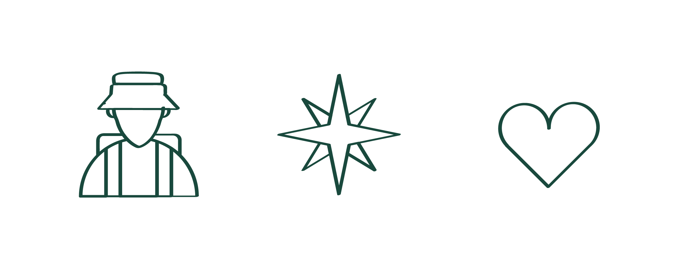
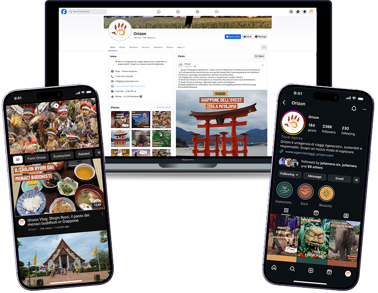

VISUAL & CONTENT DESIGN
Design and content created for people
Brand identity · Editorial strategy · Social content
A selection of visual identity, editorial strategy and social content projects shaped by people, context and communication goals.



01
BRAND IDENTITY & ICON SYSTEM · ORIZON
Building a visual system from brand values
An identity designed to communicate before it decorates
Orizon began as a brand concept dedicated to responsible and regenerative tourism. Before developing the visual language, its values, positioning and message were defined: travel as a relationship with people and places, rather than simply consuming a destination.
The logo translates these ideas through the combination of a hand and a spiral, evoking connection, reciprocity and a conscious footprint. The palette, typography, proportions and variations were developed to remain recognisable and legible across different contexts.
The identity was also extended into a grid-based icon system to create a coherent and immediately understandable visual language. The icons represent themes such as sustainability, community, culture and travel, and were designed with potential digital applications in mind.




02
EDITORIAL STRATEGY & COPYWRITING · VOCI
Building a voice from the audience
Research, tone of voice and content developed as one system
Voci is an independent media-brand concept dedicated to gender equality and social justice. The editorial strategy began by defining the audience through target groups and personas, identifying their needs, values, interests and information expectations.
This research informed the value proposition and tone of voice: critical yet accessible, inclusive and able to address complex topics without losing clarity. The blog post was then designed by combining storytelling, data, sources, SEO and personal reflection.
The headline, structure and calls to action were designed to guide readers from their first moment of curiosity towards participating in the community. Copy therefore becomes part of the experience, rather than content added only at the end.
APPROACH
The format changes. The starting point does not.
Logos, icons, articles, social posts and videos respond to different needs, but share the same process: understand who will use the content, identify the essential message and choose the most appropriate language to communicate it.
Design is therefore used as a tool to make information and ideas clearer, more accessible and more meaningful, always maintaining a relationship between people, goals and context.
Contact
UX/UI design with a people-centred approach
I am looking to join a more established environment, such as a company or agency, where I can grow as a UX/UI designer and work on digital projects that are clear, accessible and genuinely designed for people. I am interested in teams that care about quality, responsibility and the role design can play in making experiences simpler and more inclusive.
Contact me
03
SOCIAL MEDIA CONTENT DESIGN · ORIZON
Adapting content to people and channels
A coherent identity without using the same content everywhere
Orizon’s social communication was developed from the characteristics of its audiences and platforms, rather than replicating the same format on every channel. The visual identity and brand values remain consistent, while the way they are presented changes.
Facebook prioritises more explanatory messages and information available directly in the post, while Instagram uses communication that is more visual, authentic and concise. YouTube was instead designed for narrative and in-depth content.
Brand-awareness posts, travel promotions and events were adapted in format, hierarchy and amount of information. The aim was to create recognisable content that remained coherent with people’s behaviour at each touchpoint.
